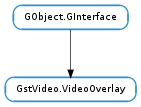

| expose() | |
| got_window_handle(handle) | |
| handle_events(handle_events) | |
| prepare_window_handle() | |
| set_render_rectangle(x, y, width, height) | |
| set_window_handle(handle) |
None
None
Bases: GObject.GInterface
The GstVideo.VideoOverlay interface is used for 2 main purposes :
Using the Window created by the video sink is probably the simplest scenario, in some cases, though, it might not be flexible enough for application developers if they need to catch events such as mouse moves and button clicks.
Setting a specific Window identifier on the video sink element is the most flexible solution but it has some issues. Indeed the application needs to set its Window identifier at the right time to avoid internal Window creation from the video sink element. To solve this issue a Gst.Message is posted on the bus to inform the application that it should set the Window identifier immediately. Here is an example on how to do that correctly:
static GstBusSyncReply
create_window (GstBus * bus, GstMessage * message, GstPipeline * pipeline)
{
// ignore anything but 'prepare-window-handle' element messages
if (!gst_is_video_overlay_prepare_window_handle_message (message))
return GST_BUS_PASS;
win = XCreateSimpleWindow (disp, root, 0, 0, 320, 240, 0, 0, 0);
XSetWindowBackgroundPixmap (disp, win, None);
XMapRaised (disp, win);
XSync (disp, FALSE);
gst_video_overlay_set_window_handle (GST_VIDEO_OVERLAY (GST_MESSAGE_SRC (message)),
win);
gst_message_unref (message);
return GST_BUS_DROP;
}
...
int
main (int argc, char **argv)
{
...
bus = gst_pipeline_get_bus (GST_PIPELINE (pipeline));
gst_bus_set_sync_handler (bus, (GstBusSyncHandler) create_window, pipeline,
NULL);
...
}
Two basic usage scenarios
There are two basic usage scenarios: in the simplest case, the application knows exactly what particular element is used for video output, which is usually the case when the application creates the videosink to use (e.g. #xvimagesink, #ximagesink, etc.) itself; in this case, the application can just create the videosink element, create and realize the window to render the video on and then call GstVideo.VideoOverlay.set_window_handle () directly with the XID or native window handle, before starting up the pipeline.
In the other and more common case, the application does not know in advance what GStreamer video sink element will be used for video output. This is usually the case when an element such as #autovideosink or #gconfvideosink is used. In this case, the video sink element itself is created asynchronously from a GStreamer streaming thread some time after the pipeline has been started up. When that happens, however, the video sink will need to know right then whether to render onto an already existing application window or whether to create its own window. This is when it posts a prepare-window-handle message, and that is also why this message needs to be handled in a sync bus handler which will be called from the streaming thread directly (because the video sink will need an answer right then).
As response to the prepare-window-handle element message in the bus sync handler, the application may use GstVideo.VideoOverlay.set_window_handle () to tell the video sink to render onto an existing window surface. At this point the application should already have obtained the window handle / XID, so it just needs to set it. It is generally not advisable to call any GUI toolkit functions or window system functions from the streaming thread in which the prepare-window-handle message is handled, because most GUI toolkits and windowing systems are not thread-safe at all and a lot of care would be required to co-ordinate the toolkit and window system calls of the different threads (Gtk+ users please note: prior to Gtk+ 2.18 GDK_WINDOW_XID() was just a simple structure access, so generally fine to do within the bus sync handler; this macro was changed to a function call in Gtk+ 2.18 and later, which is likely to cause problems when called from a sync handler; see below for a better approach without GDK_WINDOW_XID() used in the callback).
GstVideo.VideoOverlay and Gtk+
#include <gst/video/videooverlay.h>
#include <gtk/gtk.h>
#ifdef GDK_WINDOWING_X11
#include <gdk/gdkx.h> // for GDK_WINDOW_XID
#endif
#ifdef GDK_WINDOWING_WIN32
#include <gdk/gdkwin32.h> // for GDK_WINDOW_HWND
#endif
...
static guintptr video_window_handle = 0;
...
static GstBusSyncReply
bus_sync_handler (GstBus * bus, GstMessage * message, gpointer user_data)
{
// ignore anything but 'prepare-window-handle' element messages
if (!gst_is_video_overlay_prepare_window_handle_message (message))
return GST_BUS_PASS;
if (video_window_handle != 0) {
GstVideoOverlay *overlay;
// GST_MESSAGE_SRC (message) will be the video sink element
overlay = GST_VIDEO_OVERLAY (GST_MESSAGE_SRC (message));
gst_video_overlay_set_window_handle (overlay, video_window_handle);
} else {
g_warning ("Should have obtained video_window_handle by now!");
}
gst_message_unref (message);
return GST_BUS_DROP;
}
...
static void
video_widget_realize_cb (GtkWidget * widget, gpointer data)
{
#if GTK_CHECK_VERSION(2,18,0)
// Tell Gtk+/Gdk to create a native window for this widget instead of
// drawing onto the parent widget.
// This is here just for pedagogical purposes, GDK_WINDOW_XID will call
// it as well in newer Gtk versions
if (!gdk_window_ensure_native (widget->window))
g_error ("Couldn't create native window needed for GstVideoOverlay!");
#endif
#ifdef GDK_WINDOWING_X11
{
gulong xid = GDK_WINDOW_XID (gtk_widget_get_window (video_window));
video_window_handle = xid;
}
#endif
#ifdef GDK_WINDOWING_WIN32
{
HWND wnd = GDK_WINDOW_HWND (gtk_widget_get_window (video_window));
video_window_handle = (guintptr) wnd;
}
#endif
}
...
int
main (int argc, char **argv)
{
GtkWidget *video_window;
GtkWidget *app_window;
...
app_window = gtk_window_new (GTK_WINDOW_TOPLEVEL);
...
video_window = gtk_drawing_area_new ();
g_signal_connect (video_window, "realize",
G_CALLBACK (video_widget_realize_cb), NULL);
gtk_widget_set_double_buffered (video_window, FALSE);
...
// usually the video_window will not be directly embedded into the
// application window like this, but there will be many other widgets
// and the video window will be embedded in one of them instead
gtk_container_add (GTK_CONTAINER (ap_window), video_window);
...
// show the GUI
gtk_widget_show_all (app_window);
// realize window now so that the video window gets created and we can
// obtain its XID/HWND before the pipeline is started up and the videosink
// asks for the XID/HWND of the window to render onto
gtk_widget_realize (video_window);
// we should have the XID/HWND now
g_assert (video_window_handle != 0);
...
// set up sync handler for setting the xid once the pipeline is started
bus = gst_pipeline_get_bus (GST_PIPELINE (pipeline));
gst_bus_set_sync_handler (bus, (GstBusSyncHandler) bus_sync_handler, NULL,
NULL);
gst_object_unref (bus);
...
gst_element_set_state (pipeline, GST_STATE_PLAYING);
...
}
GstVideo.VideoOverlay and Qt
#include <glib.h>
#include <gst/gst.h>
#include <gst/video/videooverlay.h>
#include <QApplication>
#include <QTimer>
#include <QWidget>
int main(int argc, char *argv[])
{
if (!g_thread_supported ())
g_thread_init (NULL);
gst_init (&argc, &argv);
QApplication app(argc, argv);
app.connect(&app, SIGNAL(lastWindowClosed()), &app, SLOT(quit ()));
// prepare the pipeline
GstElement *pipeline = gst_pipeline_new ("xvoverlay");
GstElement *src = gst_element_factory_make ("videotestsrc", NULL);
GstElement *sink = gst_element_factory_make ("xvimagesink", NULL);
gst_bin_add_many (GST_BIN (pipeline), src, sink, NULL);
gst_element_link (src, sink);
// prepare the ui
QWidget window;
window.resize(320, 240);
window.show();
WId xwinid = window.winId();
gst_video_overlay_set_window_handle (GST_VIDEO_OVERLAY (sink), xwinid);
// run the pipeline
GstStateChangeReturn sret = gst_element_set_state (pipeline,
GST_STATE_PLAYING);
if (sret == GST_STATE_CHANGE_FAILURE) {
gst_element_set_state (pipeline, GST_STATE_NULL);
gst_object_unref (pipeline);
// Exit application
QTimer::singleShot(0, QApplication::activeWindow(), SLOT(quit()));
}
int ret = app.exec();
window.hide();
gst_element_set_state (pipeline, GST_STATE_NULL);
gst_object_unref (pipeline);
return ret;
}
Tell an overlay that it has been exposed. This will redraw the current frame in the drawable even if the pipeline is PAUSED.
| Parameters: | handle (int) – a platform-specific handle referencing the window |
|---|
This will post a “have-window-handle” element message on the bus.
This function should only be used by video overlay plugin developers.
| Parameters: | handle_events (bool) – a bool indicating if events should be handled or not. |
|---|
Tell an overlay that it should handle events from the window system. These events are forwarded upstream as navigation events. In some window system, events are not propagated in the window hierarchy if a client is listening for them. This method allows you to disable events handling completely from the GstVideo.VideoOverlay.
This will post a “prepare-window-handle” element message on the bus to give applications an opportunity to call GstVideo.VideoOverlay.set_window_handle () before a plugin creates its own window.
This function should only be used by video overlay plugin developers.
| Parameters: | |
|---|---|
| Returns: | False if not supported by the sink. |
| Return type: |
Configure a subregion as a video target within the window set by GstVideo.VideoOverlay.set_window_handle (). If this is not used or not supported the video will fill the area of the window set as the overlay to 100%. By specifying the rectangle, the video can be overlayed to a specific region of that window only. After setting the new rectangle one should call GstVideo.VideoOverlay.expose () to force a redraw. To unset the region pass -1 for the width and height parameters.
This method is needed for non fullscreen video overlay in UI toolkits that do not support subwindows.
| Parameters: | handle (int) – a handle referencing the window. |
|---|
This will call the video overlay’s set_window_handle method. You should use this method to tell to an overlay to display video output to a specific window (e.g. an XWindow on X11). Passing 0 as the handle will tell the overlay to stop using that window and create an internal one.